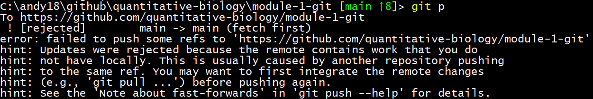
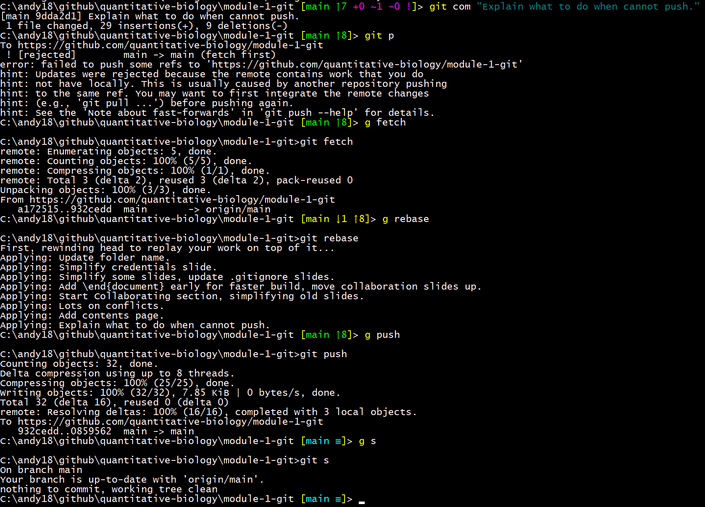
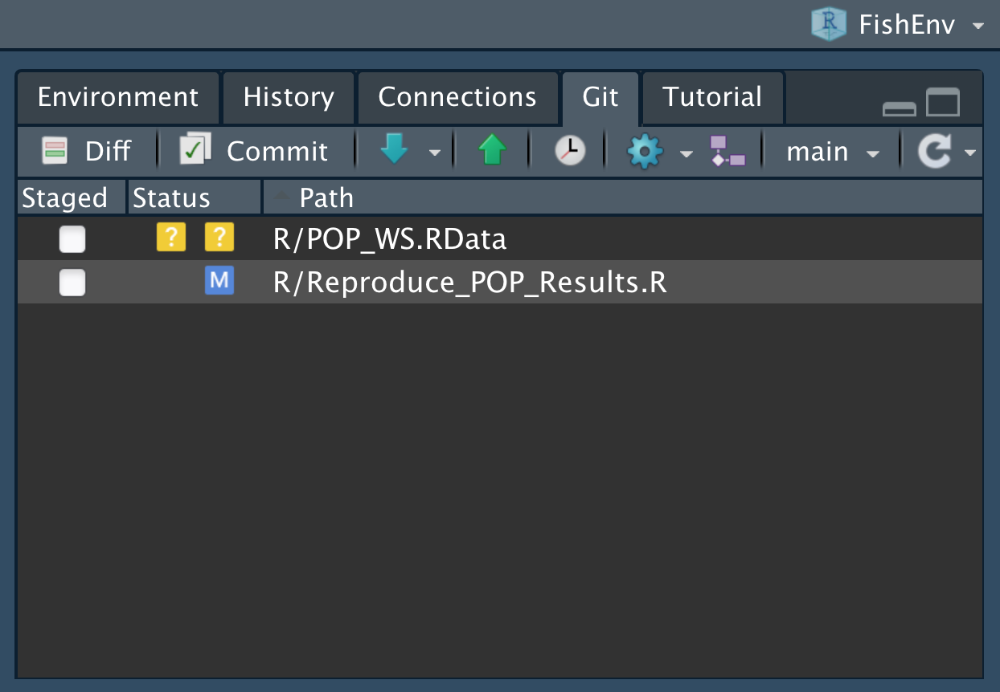

2 Introduction to Git and GitHub
2.1 What are Git and GitHub and how might they be useful?
As a biology graduate student or a professional biologist in a university or government setting, there are several reasons you might want to use Git and GitHub. We’ll discuss these shortly, but first give two definitions:
GitHub refers to the website github.com where millions of people and companies ‘build, ship, and maintain their software.’ This is organised by users having a unique username. For a particular project, a user creates a repository, which is basically a collection of code needed for that project. Repositories can be public (anyone can see them) or private (only accessible to users specified by the original owner). Hosting code in a public GitHub repository allows users to share their code with the world and collaborate with anyone. The term repository is generally used interchangeably to mean both the collection of code (which includes some files that Git uses) and the GitHub website that hosts the collection of code.
Git is software that keeps track of the latest versions of your files on your local computer. Your files can include computer code, data, write-ups of your work, etc. Git allows you to interact with GitHub to fetch code that others have changed, and to push your own changes so that others can retrieve them. Crucially, it allows you to merge each other’s changes and easily keep track of who has done what. It is called a ‘version control system,’ which means that you can go back to all earlier versions (instances) of your repository – this is occasionally very useful.
The three main ways that you may want to use Git and GitHub are (starting with the simplest):
- You want do download someone else’s code from their GitHub repository.
- You want to share your own code on GitHub with others. This will automatically include the version control aspect mentioned above.
- You want to collaborate with colleagues on a project.
We will work through these in order, giving more motivation for each as we go along.
2.2 You just want do download someone else’s code from their GitHub repository
Each GitHub repository can be viewed on GitHub. We will take a tour of a GitHub repository in the following video (TODO: add link to video.), that shows:
- the layout of the GitHub website of a repository
- the most useful parts to know about
- how to download the code if you just want to get it and don’t intend to collaborate (click the green ‘Code’ button and ‘Download Zip’); useful to get the code to a supervisor, say.
- just download one file by clicking on Raw and then save-as.
To access a private repository, and for the rest of this module, you will need to set up a GitHub account:
- Sign up for GitHub at github.com
- If possible, choose a user name that will make sense to colleagues, e.g. andrew-edwards or cgrandin, not pink-unicorn (such a name may make sense to your current colleagues, but you may want something more professional so that future colleagues know who you are)
- Desirable: attach a photo (headshot) to your profile. This makes it easy for collaborators to identify you.
For accessing a private repository, your colleague has to invite you from their GitHub repository page (they would do Settings-Manage access). You will get an email invitation, and once accepted you will have access to the repository when you are logged into GitHub.
2.3 Motivation for learning more
The above example is pretty basic. Motivation to learn more comes from various reasons:
- Scientists (including students) are working far more collaboratively than in the past
- This involves both sharing code and writing up results
- There is a push towards open science – including your code as part of a scientific paper
- We have called this a TTT approach:
- Transparent – a clear and open way to show data, code, and results, enabling reproducibility
- Traceable – a clear link from database queries and code to final results (numbers, tables, and graphs in a document)
- Transferable – it should be feasible for another person to reproduce work and build upon it with a minimal learning curve
Using Git and GitHub in your workflow greatly enables this, both when working alone and in a team. We use them extensively:
- to collaborate on writing code and producing documents (such as this entire set of modules!).
- to easily share code and R packages publically for scientific papers, and update them as necessary.
- when working alone to retain a methodical workflow.
2.3.1 Example application – Pacific Hake stock assessment
Under a formal Agreement between the Canadian and US governments, a team of four of us (two from each country) conduct an annual stock assessment for Pacific Hake (Merluccius productus) off the west coast of Canada and the US. The assessment is used to manage the stock, which is of important ecological and economic value ($100 million export value in Canada).

We fit complex population models to data to make projections about future health of the stock under different levels of catch. There is an extremely short turnaround (four to five weeks) between getting the final data, doing the analyses (model runs can take many hours of computer time), resolving new problems, and submitting the assessment document, which is typically >200 pages and contains numerous figures and tables (2021 assessment available here).
Prior to 2016, the document was assembled in Word, requiring lots of editing and amaglamating of files, often late at night. Now we share our code via GitHub, automate a lot of the document production using knitr (similar to Rmarkdown which is covered in Module 2).
So with four people constantly working on the same large document, we need to ensure we are keeping up-to-date with each other, can all produce the latest version, and have identical folder structures on each other’s computers. The alternative of emailing files back and forth is:
- very inefficient,
- prone to errors,
- just painful.
2.3.2 Examples of what we can avoid
Here are some real-world examples from not using GitHub, showing what we can avoid when using GitHub.
- Using GitHub it is easy to see what text/code collaborators have changed, avoiding things like the following example of Track Changes in Word, for which it hard to see where to get started:

- Often we may want to keep old versions of files (and email them back and forth), but without GitHub we can end up with a veritable gong show, with multiple saved versions of the same file:

- We can avoid having to manually co-ordinate having only one person working on the latest version of a document. So we don’t get things like this example, which tells me I shouldn’t really do anything now and should wait until others are done merging edits:

- We can avoid having multiple versions of a file that then have to be carefully merged:

While GoogleDocs, for example, is fine for collaborating on a short document, it isn’t suitable for sharing code that needs to be run on your local computer (or complex code containing files that refer to each other), or complex documents that are somewhat automatically updated.
2.3.3 Example of advantages that arise from using GitHub
Say you’ve off on a two-week hike while your collaborators have been diligently working away and they have edited 15 new files of code in five folders, added four data sets, and created five new pages of text towards a manuscript. With GitHub you can easily catch up with them (get all their changes onto your computer) with a few simple commands. You don’t even have to pester them to ask what they’ve done, as you can check it yourself.
So rather than this conversation:
You: “Hey, I’m back from my awesome trip and saw some bears. What have you been doing with the project?”
Likely reply: “Glad you had fun. I’m busy on something else right now. Er, where were we at when you left?”
You can have this one:
You: “Hey, I’m back from my awesome trip and saw some bears. I went through your commits on GitHub and everything looks great. Shall I get on with those questions you asked in the GitHub Issues regarding methods?”
Likely reply: “Glad you had fun, looking forward to hearing about it. I’m busy on something else right now so, yes, resolving those Issues will be great, thanks.”
And the project keeps moving in an efficient way. We’ll cover GitHub Issues later.
By having code shared publicly, it is easy to answer questions, such as this one I once received:

Rather than go searching on my laptop for the code that I hadn’t looked at for six months, I could immediately open the file (on GitHub) by clicking on the link the questioner sent. I could answer very quickly, with a simple link to the file I am referring to (there is no ambiguity):

- You can even work out who last edited a particular line of code/text (GitHub amusingly calls it ‘Blame’). Just open a file on GitHub and click Blame:

Though you’ll often find that it was you all along:

- You can properly keep track of ‘Issues’ on GitHub (discussed later) to be thought about or fixed, rather than having things in emails that get forgotten:

- Important: You still have all your work locally on your computer. So if your internet access goes down or GitHub is unavailable (which of course will only happen when you have a deadline) you can still carry on with your work.
2.3.4 Why this course?
Delving into the Git and GitHub world online it can feel like you need a computer science degree to get started. This may not be surprising as Git was written by the guy who wrote the operating system Linux, to help people collaborate on writing the operating system Linux. But it means that, for example, the second paragraph of the Wikipedia Git page says:
“As with most other distributed version control systems, and unlike most client–server systems, every Git directory on every computer is a full-fledged repository with complete history and full version-tracking abilities, independent of network access or a central server.”
Say what??? That is fairly incomprehensible to those without strong computer science backgrounds. The aim of this module is to introduce biologists to the world of Git and GitHub, while avoiding a lot of the technical details. However, once you have mastered the basics then it should be easier to delve deeper.
Our target audience is:
- graduate level biology students
- biology faculty
- government scientists
- scientists in non-governmental organisations
- in fact anyone wanting to learn these tools
This work is extended from lectures and exercises developed by Chris Grandin and myself as part of a Fisheries and Oceans Canada workshop. (Luckily Chris does have a computer science degree, and so was able to get some of us going with Git and GitHub several years ago). These tools are now widely used within our organisation.
2.3.5 Does it matter which computer language my code is in?
For sharing code, it doesn’t matter what language your code is in (R, Matlab, Python, C, …), as we will just be sharing text files. There is a learning curve, but once you get going you only really need a few main commands. Unfortunately the hardest bit is actually getting everything set up….
2.4 Getting set up for the first time
Before you start using Git you need to set up your computer to use it, and install a few other programs that are useful.
This is a one-time setup and, although it can sometimes be tricky, once it is done you will be able to easily create new projects or join others in collaboration.
We have tested the installations as much as feasible. If you have an issue then search the internet, as it may be due to some configuration on your particular computer, and also programs do get updated.
This module is for any operating system: Windows, MacOS, Linux or Unix.
2.4.1 What you will end up having installed
These are programs/things you will install. Obviously skip any that you already have working.
- A GitHub account (see earlier for instructions)
- A text editor that isn’t Notepad
- Git on your computer
Optional:
- Diffmerge or something similar for comparing changes to files (not completely necessary)
- Markdown Pad 2 or Chrome extension or something similar for viewing Markdown files (not completely necessary)
2.4.2 Text Editor
You must have a text editor that is aware of outside changes in a file. This is necessary because if you have a file open in the editor and you download an updated version of the file, you want the editor to ask you if you want to use the updated version.
We know that Emacs, Xemacs and maybe Vim are okay, as is RStudio for using R (and other) files.
Notepad is not okay. But you can download and install Notepad++ which is fine:
2.4.3 Install the Git application on your machine
See https://git-scm.com/downloads for downloading instructions for Windows, MAC and Linux/Unix
It seems best to accept the default options, except NOT Notepad or Vim (unless you use Vim) as the default editor.
2.4.4 Git shell
For this course we will use a simple git shell to type commands (rather than a point-and-click Graphical User Interface). This is for several reasons:
- Commands are the same across operating systems.
- It is easier to demonstrate (and remember) a few simple commands, rather than follow a cursor moving across a screen.
- Learning the text commands will give you a good understanding of how Git and GitHub work.
- It is easier to Google for help when you get stuck or want to learn about more advanced options.
- Commands are quick, and you can usually the up arrow (or ctrl-up-arrow) to
retrieve recent commands, or auto-complete commands using
<TAB>.
2.4.5 Git shell, RStudio
There are many Graphical User Interfaces that are available, as described at https://git-scm.com/downloads/guis.
Many (but not all) biologists use R in RStudio for their analyses. There is Git functionality built into RStudio that we discuss briefly at the very end of this module.
I use magit which works in the text editor Emacs (which for years I have used for pretty much everything, such as editing files, running R, Matlab, etc.). But I would not have been able to learn magit without first knowing the Git commands from using the shell.
For now we will stick with the Git shell for the aforementioned reasons. It will also give you a better understanding of Git and GitHub, and emphasise that you can use Git for any files, not just R code.
2.4.6 Powershell and posh-git
Download a Powershell (a shell window in which you can type commands, presumably the ‘power’ part means it’s more powerful than a basic version), Git, and then posh-git (which adds some extra features). Do this by following the instructions at https://github.com/dahlbyk/posh-git . Note that that is a GitHub site – it is storing the code for `posh-git’ (so anyone can see the code), but when you scroll down you see instructions (like in the repository example in the first video).
Do the ‘Installation’ and ‘Using posh-git’ sections. If you don’t understand some options (I don’t!) just pick the simplest, usually the first.
2.4.7 One-time authentication
The first time you get set up or start using Git, there will be some one-time authentication to connect to your GitHub account. Follow any instructions.
2.4.8 Configure the Git application
Windows
Create a local GitHub directory, such as
C:\github. It is fine to put it in a different path, but make sure there are no spaces or special characters anywhere in the full path. This is where you want to be saving your work that you are tracking with Git. You don’t have to save Git repostitories in this folder, but, especially at first, it can be helpful so you remember that you are tracking a folder with Git.TODO: Andy has to reinstall anyway and will write something here. Think it’s just following instructions.
MAC
- Create the directory
~/githubfor putting everything you’re going to track with Git (see 1. above).
- Create the directory
2.4.9 Install a difftool (optional)
A difftool will be used to examine differences between different versions of files and also to simplify merging of branches and collaborator’s code. There are many programs that can be used but for consistency we will use Diffmerge.
It is nice to have but not essential if you have trouble installing it.
Install Diffmerge: https://sourcegear.com/diffmerge/downloads.php
The configuration for directing Git to use Diffmerge will be done below.
2.4.10 Save our template .gitconfig file
- Git uses a configuration file (called .gitconfig) for your account info, name to use when committing, aliases (shortcuts) for commands, and other things.
- We are supplying a template .gitconfig file that you will then edit.
- For Windows, you will save it as
C:\Users\YOUR-COMPUTER-USER-NAME\.gitconfig, where YOUR-COMPUTER-USER-NAME is your username on your computer. - For MAC and Linux (we think), you will save it as
~/.gitconfig. - If there is already such a file there maybe save a copy of it under a different name so you don’t completely overwrite it in the next step.
- The template file is on GitHub
here. Do
Save-As(right click or from a menu) and save the file as the filename mentioned above. - Just a reminder for your understanding: that file on GitHub is shown in the normal way on the Github repository for this module: https://github.com/quantitative-biology/module-1-git/blob/main/misc/.gitconfig and the link we gave you is from clicking `Raw’, which just gives you the raw code for the file – this works for any file on GitHub, as mentioned in the opening video.
2.4.11 Edit the .gitconfig file
- Use your text editor to open the new file. Given it has a non-standard extension (i.e. it is not something like file.txt) you may have to specify to open it with your editor.
- Change the [user] name and email settings to reflect your information.
- Change the [difftool] and [diffmerge] directories so they point to the
location where you have DiffMerge (if it installed okay).
- For Windows the location should be:
C:\Program Files\SourceGear\Common\DiffMerge\sgdm.exe - For MAC the location should be:
/usr/local/bin/diffmerge
- For Windows the location should be:
- If you did not install [difftool] or [diffmerge] then delete those lines in your .gitconfig file.
2.4.12 MAC only: make your output pretty
On the MAC, navigate to the ~/github directory in a shell and run the following command:
git config --global color.ui.auto
This will make your git output colored in a similar way to the Windows powershell version.
2.4.13 Markdown Pad
Each project has an associated README.md file that appears on its GitHub
homepage. The extension .md stands for Markdown and is just an ASCii text file
that contains simple formatting (such as bold or italics). There are two options
we have used to readmarkdown files, choose one:
- The Markdown Pad 2 editor/viewer which is easy to use: http://markdownpad.com. Just get the free version.
- The Chrome extension for markdown viewing: https://chrome.google.com/webstore/detail/markdown-viewer/ckkdlimhmcjmikdlpkmbgfkaikojcbjk?hl=en.
Here is an intuitive short introduction to Markdown, which is worth looking at once you start writing more in your README.md files: https://github.com/adam-p/markdown-here/wiki/Markdown-Cheatsheet.
With one of the above two options installed when you click on a READMEmd file you can edit the file and also see the rendered (formatted) version.
2.4.14 Bonus keyboard shortcut
In the upcoming video, I may type g instead of git as I have that shortcut
set up. To enable this shortcut for yourself (this is not essential), create a
file (on Windows at least) called g.bat
somewhere on your PATH, and have it contain just the line git %*.
2.5 Using Git and GitHub to share your own code
CHECK: This section also has two (TODO: may split first one up) recorded videos to demonstrate the main concepts and ideas. We suggest watching a video and then attempting the corresponding exercise. The notes here also give the details you need, so you can easily refer to them after first watching the corresponding video.
The first video is available here and the slides from the talk are to be addedTODO, though the notes below mostly replicate the slides.
2.5.1 Definitions
Let’s recall the main definitions:
- Repository – essentially a directory containing all your files for a project (plus some files that Git uses). Also used to mean the website on GitHub.
- Git – a program that allows you to efficiently save ongoing versions of your files (`version control’) and link with GitHub.
- GitHub – a website that hosts your repositories so that you can easily share code and collaborate with colleagues.
Basically, the idea is that you work on your files in a repository on your computer, use Git on your computer when you are happy to keep your changes, and use GitHub to easily share the files.
In the opening video you learnt how to navigate a repository on GitHub and how to download other people’s code Here you will learn the important steps for your own repositories:
- Creating – create a new repository on GitHub
- Cloning – copying it to your local computer
- Committing – the crux of working with Git
- Collaborating – efficiently work with colleagues
- Conflicts – fixing conflicting changes when collaborating (happens rarely)
2.5.2 Creating a new repository
- Sign into your GitHub account, click on the Repositories tab, and press the New button.
- Give your repository a name. Let’s call it test.
- Check Initialize this repository with a README.
- Leave Add .gitignore and Add a license set to None
- Click Create repository.
You now have a new repository on the GitHub website. Next we will clone it onto your computer.
2.5.3 Cloning your new repository
- Copy the full URL (web address) of your test repository.
- Open the Git shell and navigate to your
C:/githubdirectory (or whatever you called it when you created it in the setup instructions – it’s the place you are going to save all your Git repositories). - Run the following command to clone your repository:
git clone URL
where URL is the url of your newly created repository (paste should work).
You should now have a subdirectory called github/test on your computer.
In Git shell, change to that directory (with cd test). The command cd just
stands for change directory, to go back to where you were just do cd ... You
probably want to also open the directory using your usual graphical interface (e.g. File Explorer
in Windows) to check what is happening.
So ‘clone’ is Git speak for copying something from GitHub onto your local computer. This example has just one file (README.md). But the process is the same for a repository with multiple files and multiple directories, and the complate file sturcture is fully preserved.
Windows only: Storing your credentials
When you are using the Git shell for the very first time on Windows, issue the following command:
git config --global credential.helper wincred
This means that you don’t have to repeatedly enter you GitHub password (just do it when you are first prompted).
2.5.4 Committing
- Create a new file, newFile.txt, in the
github/testdirectory. - Open it, add a line of text at the start of the file and save it.
- Check the status of your (test) repository:
git status
- It should say that you have an ‘Untracked file’ called newFile.txt. You want to tell Git to start tracking it, by using:
git add. gitignore
- Type
git statusagain. - You should see that the file is listed as a ‘new file’ under ‘Changes to be commited.’
- Let’s now ‘commit’ it:
git commit -a -m "Add newFile.txt."
The commit message (in the quotes) should be a useful message saying what the commit encapsulates (more on that later).
- Push the commit to GitHub:
git push
- Check (refresh) the GitHub webpage and see your commit and the uploaded file.
What just happened?
We just used three of the main Git commands:
git add <filename>– tell Git to start keeping track of changes to this file. You only need to tell Git this once.git commit -a -m "Message."– committing your changes, which means tell Git you are happy with your edits and want to save them.git push– this sends your commit to the GitHub website.
You always have your files stored locally on your computer (as usual), even if you don’t add them or commit changes.
When you push to GitHub then your colleagues can easily fetch (retrieve) them.
Keyboard aliases (shortcuts)
Now,
git commit -a -m "Message."
is a bit much to type, so we have an alias for it:
git com "Message."
This is defined in the .gitconfig file you installed in the git-setup
instructions into C:\Users\YOUR-USER-NAME\.gitconfig (for Windows). You can
also add your own commands to that file.
The -a means ‘commit all changes of files that Git is tracking,’ and -m is
to include a message. Since we usually want to do both of these,
git com "Message." is a useful shortcut. But it is important to realise it is an alias if searching online for help.
Similarly:
git s – for git status
git p – for git push
git d – for git diff
git f – for git fetch
From now on we will mostly use the aliases. Use the full commands if the .gitconfig file didn’t work for you.
Edit Readme.md
Edit the Readme.md file. Add some simple comments describing the project such as: “A test repository for learning Git.”
Look over the changes, commit them, and push them to your GitHub repository:
git s
git d (or git diff) – this gives a simple look at the differences between
the last committed version and your current version (of all files; only one in
this case).
git com “Initial edit of Readme.md”
git p (or git push)
Refresh your GitHub web page and you should see your text (the Readme.md file is what is shown on the main page of your repo).
If you got Diffmerge installed okay, then instead of git diff you can do git difftool. This opens up, in turn, each file that changed since your last commit
and shows you the differences. On the right is the new text (actually the code
for this paragraph):

This is useful for changes that are more complex
than can be easily see in the quick git d.
2.5.5 Exercise 1: create, edit and commit simpleText.txt
- Create a text file simpleText.txt in your local
testrepository. Add a line of text at the start and save it. - Predict what
git swill tell you, then type it in the Git shell to check. - Add the file to the repository using the git commands:
git add simpleText.txt
git s – not necessary but useful to check you understand what is changing before you commit
git com "Adding simpleText.txt"
git p
- Add some more test to simpleText.txt then
git com "Message."andgit p. - Repeat this a few times to get the hang of it.
git comfrequently andgit poccasionally (you do not have to push every commit), while intermittently doinggit sandgit dto understand what’s changing. - Keep an eye on your commits by refreshing the GitHub page.
In reality when writing code/text you won’t be committing quite so frequently, as your focus will be on the writing the actual code/text.
Adding multiple files at once
Often you add multiple files in a new directory. When you run git s, you will
see a large list of Untracked files. They can be all added at once by simply
adding the whole directory.
2.5.6 Exercise 2: multiple files
Do the following, to get the idea of creating multiple files in a folder and committing that folder.
- Create a new directory called new-stuff in your
testrepository, using your normal method (e.g. in File Explorer, or justmkdir new-stuffin the shell). Navigate to it in your shell (cd new-stuff). - Add a few new test files to that directory called test1.txt, test2.txt, etc. Put some example text in one or more of them if you want.
- On the command line, check the status:
git s
You will see a listing showing the new-stuff/ directory in Untracked files.
To add all the new files in preparation for a commit, issue the command:
git add new-stuff/Check the status of the repository again with
git sIt will now show all files in Changes to be committed
Commit the changes:
git com "Added new-stuff directory."
- Push the changes to GitHub:
git p
- Check your GitHub webpage and see your commit and that the files have been uploaded.
- That works no matter how many files are in your new-stuff directory. There could be a hundred and it’s the same command.
Wildcard symbol *
This is useful to know (no need to do it as part of the exercise):
- To add multiple files with similar names you can use the wildcard
*symbol. - You just added (told Git to keep track of) the new files in your new-stuff/ directory.
- If you add more new files to that directory, you will have to tell Git to track those also. This is because they are new – you haven’t told Git about them yet.
- Say you have 10 new files called idea1.txt, idea2.txt, …, idea 10.txt.
- Instead of typing
git add new-stuff/idea1.txt
git add new-stuff/idea2.txt
etc. you can just use the wildcard symbol * which stands for any piece of text:
git add new-stuff/idea*.txt
or even just
git add new-stuff/*.txt
or
git add new-stuff/*.*.
The .gitignore file
But what if you don’t want to add all the files that you create?
Each repository can have a .gitignore file, in the root directory of the repository.
Such a file has names of files (such as my-secret-notes.txt) or wildcard names
(such as *.pdf or *.doc) that will be completely ignored by Git.
For an example, see
https://github.com/pacific-hake/hake-assessment/blob/master/.gitignore,
noting that the # can be used for comments.
When sharing a repository with others, you want to share your code (for example, R, Python or Matlab code) and maybe data, but generally not share the output (such as figures that the code generates; more on this later). For reproducible research your colleague (or anyone) should be able to run your code to generate the results.
Some programs you run may make temporary files that don’t need to be tracked by Git, the names of which should also be included in your .gitignore.
When sharing code or collaborating you want to keep your repository as clean as possible and not clutter it up with files that other people don’t need.
So when you run git s and see untracked files that you don’t want to be
tracked, add them (or a suitable wildcard expression) to your .gitignore file
so that they are not added inadvertently.
This will also simplify your workflow (you don’t need to keep being reminded that you have untracked files).
If you are on MacOS and you find that folders have a .DS_Store file in them, then include .DS_Store as a line in your .gitignore file.
Generally, when you create a new repository you probably want to copy an existing .gitignore file over from an existing repository, as you will generally want to ignore the same types of files.
You can also choose the private repository option when creating a repository,
so that you can control who can see it. On your repository page on GitHub, go to
Settings--Manage Access to add collaborators.
2.5.7 What to write in commit messages
You don’t want to agonise over what you write in your commit messages, when
doing git com "Message", but it is worthwhile making them useful. Ideally
- You want to describe what (and sometimes why) you did something.
- The how is not needed since that will be explained by the actual changes in the code. If someone wants to see how something was done, they can see what was changed in detail in the commit.
- The message should be informative for collaborators (including your future self).
Not useful:
git com "Tweaked function."
Useful:
git com "Allow plot.biomass() to use extra colours."
A good rule of thumb is to just complete the sentence “This commit will ….”
This is helpful for your collaborators and your future self.
You have now learnt the basics of using Git. By creating a public repository on GitHub you can now release your code to the world!
2.6 Using Git and GitHub to collaborate with colleagues
2.6.1 Demonstration of collaborating
Now we will show how to collaborate with colleagues, which is where the usefulness of Git will become more apparent.
There are a few different ways to collaborate using Git and GitHub. We will focus on the following one since it is the simplest, and is what you need to collaborate with colleagues.
Concept: there is a project where people contribute to a main repository that is considered the ‘master copy.’
- Everyone clones directly from the creator’s repository.
- All collaborators push their commits to the repository (the creator has to add them as collaborators once on GitHub).
Since the creator has to grant permission, you won’t have just anyone contributing to (and maybe messing up your work), just your trusted collaborators.
But you have to trust your team to not mess things up (more on that later!).
Now watch this video in which we demonstrate the following:
Kim creates new repo called
collaborate(and clones it to her computer).Andy clones it also.
On GitHub, Kim gives Andy ‘push access’ to her
collaboraterepo.Both do some edits (create some new simple text files).
For Andy to get Kim’s updates (and vice versa), he just uses:
git fetch(or justgit f) – fetches the latest version of the repository from GitHub onto your computer. Your local files have not yet changed (check them), but Git has the changes stored on your computer (?!?).git rebase– updates your local repository (the committed files on your computer) with the changes you have just fetched, merging both people’s work together.git p– pushes the merged changes back up to GitHub so that the other person can get them.
That is the basic workflow.
In the video you saw that we also showed an example of git p not being allowed for Person A because
there are recent commits on GitHub (by Person B) that Person A has not yet
merged into their local version of the repository.
Here is an example of the error message you get:

While a bit lengthy, the error message is useful. It forces you to get the other person’s work before you push yours. You do this by:
git f
git rebase.
So to be allowed to push, just fetch to get the new commits onto your computer,
and then rebase to combine the commits into your local version. Then you can
git push.
Here is a full screenshot (‘g’ is just a shortcut for ‘git’). The green up arrow number 8 tells me I have 8 commits to push to GitHub. The yellow arrows I think of as just implying I need to do a rebase (before doing that I might browse through the other person’s commits on GitHub):

After the rebase I was allowed to push and then everything is up to date.
2.6.2 A bit more about git rebase
- Andy commits local changes, tries to
git pushbut is told to firstgit fetch(to get Kim’s changes from GitHub). - Andy does
git fetchand thengit rebase. - What
git rebasedoes is basically rewind to the last common commit that both people had, and then add one person’s commits and the others. - Andy then does
git pushto push his commits to GitHub (from where Kim will fetch them when she’s ready). - Providing there are no conflicts, this will work fine.
Another option you hear about is to do a git merge, which basically creates a new commit that merges both people’s work together.
In our teams we used to use git merge and now use git rebase; some people don’t
like git merge because it adds extra commits.
For a more in-depth understanding see here for one of the clearer explanations out there concerning rebase versus merge.
Note that the error in the above screenshot (when I could not git push) told
me that I might want to do git pull. This is basically
git fetch
git merge
in one command, but it seems preferable to do
git fetch
git rebase.
2.6.3 Fixing a conflict
- A conflict happens when two people have edited the same line(s) of the same file.
- Conflicts happen relatively rarely and can be generally avoided by co-ordinating with collaborators so that you are working on different files. But, they will happen and you need to know how to resolve them.
- Git forces you to explicitly decide whose changes to keep – this is a good thing, since you want a human to make such a decision.
In the video we demonstrated a conflict.
The best approach I have found to fixing a conflict is the following:
- Trying
git rebasewill tell you there is a conflict. git rebase --abort– do this to abort the rebase attempt.git merge– this will tell you there is a conflict.- Open the file(s) with the conflict and edit the text (see below).
git add <filename(s)>– you have to then add the files that had the conflict (I am not sure why this is necessary, I just do it).git com "<message>"– in your commit message you can explain how you fixed the conflict. This is useful so that your collaborators know you have resolved a conflict (they can look at the commit to see if they are happy with it).
The merge message will tell you which files are conflicting. Open those files one by one, and you will see the conflicted section bracketed like the following:
<<<<<<< HEAD
Line(s) of text/code which are currently in your file.
=======
Line(s) of text/code which are trying to merge in, but conflict.
>>>>>> origin/mainwhere origin/main refers to the version you have fetched from GitHub.
All you do is remove the line(s) of text that you do not want to keep (or edit
the line(s) to be something else entirely), and remove the bracketing lines
<<<... and >>>..., and the ====== line.
Save each conflicted file and then (as mentioned previously):
git add <filename(s)>
git com "Kept Kim's edits as more consistent with remaining text."
git p2.6.4 Exercise 3: collaborating on a single repository
If you have a colleague available, try what we just did:
- Person 1 creates a new repository on GitHub and clone to their computer.
- Give the Person 2 ‘push access’ to the repository (on the repo page on GitHub: Settings – Manage access – Invite a collaborator)
- Person 2 clones to their computer
- Both create a simple text file (use different filenames), add some text and, as usual,
add,commit, andpush. git fetchandgit rebaseto get the other person’s file.- Continue editing either file, committing, and pushing.
- If you get the push error (shown earlier), refresh GitHub repository site to see recent commits (click on the X commits link, where X shows the total number of commits to the repository). You can easily spot the other person’s recent commits. Click on one (the bold message) to see details.
- Purposefully create a conflict (both edit the same line of the same file). Resolve it as described earlier.
- In practice you won’t commit so frequently when working, but this is good to get the hang of it.
2.6.5 Collaborating summary
Congratulations, you now know the few basic commands and functionality needed to collaborate with Git and GitHub. It takes a bit of practice, but it is very powerful.
95% of the time, this is all you are doing:
- Change some code.
git s
git d
git com "My commit message"`
git p(the git s and git d are useful to check you have changed only what you think you have changed).
If GitHub does not allow you to push then on GitHub check your colleague’s latest commits that you haven’t yet seen, and if they look fine then:
git fetch
git rebase(If you don’t agree with your colleague’s latest commits, then still rebase them
but then manually edit the files to be what you want. Though if you want to completely
cancel their commits see git revert in the Advanced section below).
If conflicts, then
git rebase --abort
git mergefix the conflicts manually and then
git add <conflicted file(s)>
git com "Message to explain what you did"
git pChange some code and repeat!
2.7 Workflow tips when collaborating
Here are some tips that we’ve developed based on our own experiences.
Overall, remember that you still edit and save your files in the usual way on your local computer. If you don’t do Git commits you will still have the latest versions of your files on your computer, as you would if you weren’t using Git at all. So if you do get stuck with Git you can carry on working as normal (though you probably do want to try and fix it at some point).
When collaborating:
- If working closely with others, when you start each day (or after a break)
then make sure you are up to date and have all their commits. Refresh the
GitHub page for you repository, and
git fetch(or justgit f) andgit cloneif needed. (To be safe you cangit fandgit sto check). - We find it helpful to co-ordinate our work (Slack is useful for this, or use GitHub Issues for complex discussion – see below), so that if multiple people are working at the same time, you are at least not working on exactly the same parts, just to reduce conflicts.
- Commit fairly frequently and write helpful commit messages (so your colleagues get an idea of what you’ve done in each commit). Push less frequently, and don’t push code that doesn’t work – that will annoy your colleagues. And then they (and probably you) may both spend time fixing it.
- To see who last edited a particular piece of code, when viewing the file on GitHub click Blame, as mentioned earlier.
GitHub Issues
GitHub Issues are very useful for discussing issues with your repo. For our annual Pacific Hake assessment we have used them extensively over the years:
The Issues tab lists our current ‘Open’ issues – we have 20, of which five (the most recently posted) are shown here. We are currently in-between assessments (and not working on it), so we have created Issues that we want to think about or deal with for next year. This avoids forgetting about ideas or losing them in old emails.
Issues are intuitive to use. There is a bright green ‘New Issues’ button to create new ones, you give a title and then write some details, people can reply, you can assign people to look at them, and you can close them. In the above screenshot you can see that we have closed 815 issues (this was over several years).
Useful tip: when doing a commit that refers to an Issue, if you refer to the
Issue number (with #<number>) in your commit message, then after pushing that commit the Issue on
GitHub will automatically mention and link to the commit:
git com "Add more options to fancy_function(), #21."
will mention the commit when you look at the issue. You can even automatically
close the issue by saying closes #21 in your commit message:
git com "Add more options to fancy_function(), closes #21."
Issues are particularly useful to avoid cluttering up code with commented notes or ideas that you may easily not come back to, or avoiding endless emails that end up getting overlooked. You don’t have to fix an Issue to close it, you can decide not to pursue, but at least you have made a decision.
(We also use Slack a lot to communicate, but moreso for quick questions or bouncing ideas around – Issues are better for stuff that you want to come back to at some point).
You may receive emails regarding Issues, but if you use GitHub a lot you will see Notifications (the blue dot on the bell in the top-right corner when signed in on GitHub) and that will show you new Issues of repositories you are involved with, or if anyone has updated an Issue.
GitHub organizations
If you will frequently collaborate with colleagues, you can create an Organization on GitHub and invite collaborators to it (click on your GitHub photo in the top-right corner, Settings, Organizations). Then they will automatically have access to all repositories created under the Organization. You can choose the security settings.
So, congratulations for getting this far – we have covered the basics of Git and GitHub to get you going. Occasionally you might get messed up, but it is generally hard to actually lose any work. If you get stuck then see ‘The power to go back’ part of the next section, that contains more advanced material. Good luck and happy committing!
2.8 Beyond the basics of Git and GitHub – getting more advanced
This section gives slightly more advanced background that should further improve your understanding (including why Git is useful even when not collaborating or sharing your code). If you’re doing this module for the first time maybe read this section now so that you know what is here, but don’t worry about understanding it all until you have become more familiar with using Git and GitHub.
2.8.1 So I’ve made some changes but don’t really want to keep them – git stash
If you’ve changed some code but have not committed it, and then maybe got in a mess and just want to go back to your last commit, you can stash your changes
git stashand to include a message (for your future self):
git stash save "Message"This stashes them away such that they can be retrieved later if necessary. This is handy. You may think you don’t want to keep those changes, but sometimes you may later wish you had kept them somehwere. Note this is only for files that Git is tracking (i.e. files that have been added at some point).
To retrieve the last stash, you ‘pop’ them back into your working copy with:
git stash pop
You can have multiple stashes, seen by doing:
git stash listTo deal with these, and other aspects of stash, see this tutorial.
If you are really really sure that you do not want to keep your recent changes, see the ‘Undoing changes not yet committed’ section near the end of this module.
2.8.2 The power to go back
With Git you can revert back to any previous state of your repository. This is very powerful, though slightly scary at first.
Do this with your test repository, that should have some files in it from the earlier excercise:
git sto make sure you are all up-to-date (commitand/orpushif necessary).- In File Explorer (or whatever you use) look at your repository, you should see
all your files, including the
new-stuff\directory. - Look at the commit tab on GitHub for your test repo and click on the clipboard icon to copy the HASH number thingy to the clipboard .
- In Git shell:
git checkout HASH(whereHASHis the pasted HASH, orgit co HASHusing our Alias) - Look at File Explorer again – your
new-stuffdirectory should have … disappeared!! - (If it hasn’t disappeared then open it – the test files, i.e.
test1.r,test2.r, etc. should be gone, but your text editor may have saved backup versions; manually delete them plus thenew-stuff/directory.) - You are now back to the very first version of your repo!
Powerful and scary.
Now, to get your files back to the most recent version you had committed:
git checkout main(it used to begit checkout master, the names have recently changed).
That’s it! Check that your files are back. All this means that you can revert to any previous commit in your repository.
This is very reassuring. For example you have some complex code that you realise is now a complete mess and you want to go back to yesterday’s version of everything.
In practice you rarely actually do this, but it’s very comforting to know that you can.
Consequently, your workflow is less cluttered and more tractable than having to save multiple versions of the same files with dates in the filename, such as this nightmare:
Retrieving older work in practice
I think there are fancy ways that Git can replace a current file with a version from an earlier commit. But, in practice (especially since you rarely want to do this) it is a bit safer to do the following:
- Say you are up-to-date (
git ssays all is good), but your programmy_code.Rjust isn’t working and you want to go back to the version you had yesterday at commit numberabc123. git co abc123(orgit checkout abc123) to checkout the earlier commit, which includes the old version ofmy_code.Rthat you want get.- Copy
my_code.Rto a new filemy_code_old.R. In the shell you can just do this withcp my_code.R my_code_old.R. - Do NOT edit
my_code.Ror make any changes, as you may end up with a scaryDETACHED HEADwarning. git co mainto checkout the latest version again.- Since you have NOT done
git add my_code_old.R, Git is not trackingmy_code_old.Rand so it is just sitting in your folder as normal. - Now you can manually copy what you want from
my_code_old.Rintomy_code.Rto fix your problem. It could be the full file, or just some part of it. - Then commit as normal.
- At some point you can delete
my_code_old.Rso it is not hanging around, but you don’t have to. (Though maybe make a note in it as to which commit it was from, in case you do need it again).
2.8.3 So how does Git do all this?
By now you’re probably wondering how Git keeps track of everything. Git does not keep versions of code, it keeps commits. The commits are kept track of using a HASH key which is a generated 40-digit key in hexadecimal (base 16). The hashes are what you see on GitHub and in various places when you use Git shell.
By stitching all the commits back together again, Git can recreate all your code.
There is a hidden .git/ directory in each repository.
Look at the .git/objects/ subdirectory. Each subdirectory name is the
first two digits of a HASH. The rest of the digits of the HASH are the filenames in the
subdirectory.
You can basically think of the hashes as representing commits (apparently they can also
be blobs and trees, whatever they might be).
I think of the files in the subdirectories containing the differences between each commit.
Because of these structures, Git can go back and rebuild any or
all files at any commit, and even have different directory
structures at each commit.
Since Git is keeping track of differences between files, this all works best for
plain ASCii (text) files, such as .R, .txt, .Rmd, etc.
Git does work for binary files, such as .xls, .docx, .RData, but since
changes to the files are not easily saved (Git essentially has to resave
the whole file at each commit), this is not very efficient and may make
your repository large. Such files will be fully resaved every time they
are changed. Think of a binary file as something that you cannot open in a
text editor and read (it does not contain simple ASCii letters and numbers).
Exceptions: often you may have an image or photo or other type file that you need to share for a document, but it isn’t going to keep changing. So that’s fine to commit.
An example of why you should not commit binary files:
- A collaborator was running some R code (and correctly committed the
.Rfiles so that I could run it), but also committed the results, which included.pdf,.pngand.RDatafiles, which can get quite large. - But, these latter files got updated every time the code was run. So changing
one line of the
.Rcode (which Git deals with very efficiently), and running that code and committing, resulted in the new.pdfetc. files being fully saved (since Git cannot just save the difference from the last commit because they are binary files). Even if, say, one point changes on a figure in a graph in a.pdffile, Git has to save the whole new version. - This ended up with
.git/objects/pack(whatever that might be!) being 2.8Gb. - I needed space quickly on my computer so just deleted four files in
.git/objects/pack, which freed up 1.6Gb. - Note that I still had the actual final versions of files (as you would if not using Git), but just not the full repository history.
- However, when I tried to later do some work and then
commitI got lots of ‘fatal’ errors with scary messages likebad object HEADand the awesomely titledYou are on a branch yet to be born:

I just had to start again from scratch (clone again I think). Take-home message:
Don’t mess with the .git directory!!
2.8.4 Git terminology
At some point you will likely need to search online for some help (often questions are posted and answered on the excellent ‘stackoverflow’ website). A bit more understanding of terminology will help you.
Remember that Git keeps commits. Several of these commits have pointers to them that have special names:
- HEAD points to the commit you are currently on in the Git shell.
- main or master is the default branch when you set up a repository on GitHub (it is usually main now because of recent changes on GitHub).
2.8.5 Branching
So far we have only worked on the main branch. Sometimes you want to create a new branch that branches off from the main branch. It’s bit like a tree branching, except that at some point you want your new branch to be merged back into main.
For example, you may want to try adding some new code to your project, but don’t want to break what is already there. You may do this even if working alone, but it’s especially useful if you are collaborating, or if, say, you have an R packages hosted on GitHub that anyone may be downloading – you don’t want to annoy them by pushing experimental code that doesn’t work.
So you would create a new branch, work on that new branch (i.e. commit changes to the new branch), and when you are happy with your new changes you can easily merge it all back into main.
Working on a new branch
When creating a new branch, your starting point is identical to the branch you were when you created the new one.
In the Git shell navigate into your test repository:
cd test
Depending on your set up, you should see main indicated somewhere (if not do
git s and it should say On branch main.
Make sure you are up-to-date and have committed all changes (git s, and
commit if necessary).
Create a new branch called temp, this will be based off the latest commit of the main branch you are currently on:
git checkout -b temp
(We have an alias for that: git cb temp`).
You will be automatically placed in the new branch called temp, and commits you make will now occur in that branch only.
Make and commit some changes (e.g. add a new file) – these will now be on
your temp branch.
You can push to GitHub. The first time you try git p, the Git shell will
tell you that you need to type the following so that future pushes go to the
new branch:
git --set-upstream origin BRANCH-NAME
Check the GitHub webpage to see that your branch was pushed. You repository page (that will still be looking at your main branch) may tell you that there is a temp branch with more recent commits than main. If not then if you click on the main drop-down menu:

it should give you the option to look at your new temp branch. (The ‘1 branch’ in the above image should also say ‘2 branches’).
You can now view your new file in your new temp branch on GitHub.
A graphical way to see and understand branching is to click on Insights–Network to see the Network graph.
The Network Graph is a useful visualization tool, where each commit is shown as a point on the graph (the numbers along the top are the dates). You can hover your mouse over a commit to see who committed it and the commit message. You can click to see full details of the commit. The Network Graph is particularly useful if you or others are working on multiple branches, or to check details about merges.
Okay, back in your Git shell you can easily switch back to your original main branch:
git checkout main (or the alias git co main).
You will see that the file you just added is gone, because it only exists in the temp branch at this moment.
Imagine that in your temp branch you did several commits to create a new function in your code, or have added some new text to a report. Now you are happy with what you’ve done you want to merge it back into the main branch.
To view all local branches:
git branch
There is an asterisk next to the branch you are currently in.
To switch to another branch (main in our case):
git checkout main
To combine the changes from the temp branch:
git rebase temp
or
git merge temp
Now the file you created in the temp branch now appears in the main branch. All commits done in the temp branch will now be in the main branch as well.
If there was a merge conflict, you must fix it at this point (see earleir).
Once you’ve merged your temp branch into main, you don’t really need temp any more and so it is good protocol to delete to keep things tidy:
git branch -d temp
If you have unmerged changes in a branch, you will not be allowed to delete it, but Git shell will tell you the command to forcibly delete it:
git branch -D temp
Warning – you won’t be able to get any of those changes back once you do this.
To remove a branch entirely from GitHub:
git p origin --delete BRANCH-NAME
2.8.6 Pull requests
You often hear about ‘Pull requests,’ but in my workflow I’ve rarely used them. A pull request is when a contributor asks a maintainer of a Git repository to review code the contributor wants merged into the repository. It’s not really used when collaborating with your own team, but more when you have started with someone else’s repository and either made a branch or forked it, made some improvements (you hope!), and then you request that they pull your improvements into their main repository. So fairly advanced. For more details see here.
2.8.7 Undoing stuff
If you make a commit followed by other commits, then realize you want to undo the earlier commit, you use revert:
git revert HASH
where HASH is the hash for the commit you want to undo. Remember that Git shell is smart enough that you only need the first five digits:
git revert 1ef1d
This actually creates a new commit with the automatic message
Revert "<previous commit message>".
Obviously, you have to be careful with this if you’re changing something that was a few commits back, as you might mess up your code.
Undoing changes not yet committed
If you’ve made a mess in your working directory and you want to change everything back to the way it was on the last commit:
git reset --hard HEAD
If you’ve messed up a single file and just want that one file to go back to the way it was on the last commit:
git checkout HEAD <filename_to_restore>
Warning – running these commands will delete the changes you have made. Since
you have not committed any changes, they will be lost. Make sure you are certain
you don’t need the changes before running these commands. If you aren’t sure if
you need the changes again in the future, use git stash instead.
Changing the commit message in the last commit
If you make a commit then realize you want to change it (add more information, fix something that will confuse your colleagues, fix something that will confuse you tomorrow), you can change the commit message:
git commit --amend -m "Correct message."
This only works on the last commit.
If you already pushed the commit before realizing that the message needs modification, do this:
git p --force
after making the amendment to the commit message.
2.8.8 Using R and GitHub within RStudio
If you use RStudio to work in R, then you may want to use RStudio to use Git. Having already learnt the basic Git commands in a shell should help you.
One way of using Git in RStudio is just to use the commands we have learnt within the ‘Terminal’:

Alternatively, the RStudio interface has buttons with words that you are now familiar with, such as ‘Diff’ and ‘Commit’:
 The blue arrow has options for fetching from GitHub, while the green arrow is for pushing to GitHub.
When you commit, instead of including the message in the Git
command like we did, with git com "<Message>", RStudio opens a window:

As you can see, having learnt what these various Git commands mean, it may be fairly intuitive how to proceed.
To delve further, Jenny Bryan’s Happy Git and GitHub for the useR course introduces using Git in RStudio. It was originally developed for advanced-level statistics courses and is aimed at intermediate to advanced R users. It does include some use of a shell (like our module); for details on pre-requisites see here. Having worked through our Git and GitHub module, you should easily be able to pick up the necessary components that you need.
In this module’s videos that had R code, I was using the Emacs text editor. I’ve used it for years for many reasons: it automatically highlights code in any language, is extremely versatile, has keyboard shortcuts which you can learn once and use forever, and as such it is fast to use when programming and avoids lots of mouse use (which can help avoid repetitive strain injury). I run R in Emacs with Emacs Speaks Statistics, and often use magit which is a way of using Git in Emacs. Also, enhancements to Emacs can improve accessibility for those that need it; for example, Emacs’ customisability can greatly improve productivity for visually impaired programmers.
Finally, one colleague use RStudio to run R, Emacs to edit R files, and magit (in Emacs) to run Git. You will likely similarly figure out what setup works best for you.